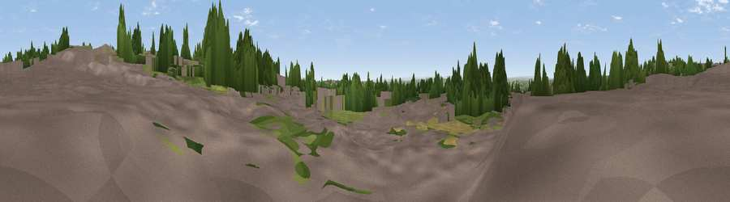

Viewpoint near Scholes
#40004 in England · top 79% of its area beats it · near ScholesWhere it is
The exact computed spot (SE 35640 36232). Click the marker for map links.
The view, rendered

A 360° render of this exact spot computed from the terrain model, tree cover and land cover — summer colours, afternoon light, calibrated against photographs of famous viewpoints. Real trees, hedges and buildings will differ in detail.
The panorama
Grey silhouette: terrain skyline in each direction (720 bearings, Earth curvature and refraction included). Dashed green: skyline with trees (+15 m) and buildings (+8 m) as obstacles. Blue strip: how far the ground is visible on each bearing.
Where the view opens
Wedge length = distance to the farthest visible ground on that bearing (vegetation-aware). Rings at 10, 25 and 50 km.
What fills the view
43% built-up · 34% woodland · 20% grassland · 2% cropland ·
Angular shares of the visible panorama (visual magnitude), not map area. Landscape diversity 0.51 (0–1 Shannon).
Key numbers
More beautiful places nearby
The staircase of upgrades: each row has a higher view potential than everything closer. Driving times are estimates from straight-line distance, calibrated against real road routing — check an actual route before setting out.
| Place | Direction | Drive | Score |
|---|---|---|---|
| Hill 60 | WNW · 3 km | ~8 min | 29.4 |
| Viewpoint near Shadwell | N · 3 km | ~8 min | 49.2 |
| Viewpoint near Great Preston | SSE · 8 km | ~16 min | 52.2 |
| Roach Hill | SE · 8 km | ~16 min | 54.1 |
| Viewpoint near Rigton Hill | NNE · 9 km | ~18 min | 55.3 |
| Viewpoint near Micklefield | ESE · 9 km | ~18 min | 65.7 |
| Rawdon Trig point | WNW · 14 km | ~25 min | 69.6 |
| Rawdon Billing | WNW · 14 km | ~26 min | 72.7 |
53.82114, -1.46010 · source: osm viewpoint · position refined by local search. Computed location — check access rights before visiting.